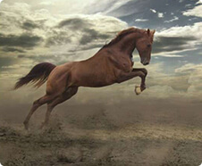
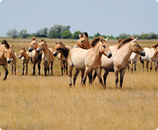
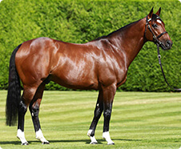
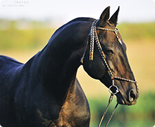
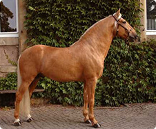

Интересные статьи
-

Интересное о лошадях
Лошади – это уникальные животные. Замечали ли вы, что они обладают целительной силой, способны влиять на психику человека, имеют невероятную грациозность, восхищая каждого? Лошади очень интересны, сильны, совершенны, и об этом свидетельствуют множество фактов. 1. Лошадь во многом влияет на опорно-двигательный аппарат. Она с каждым...
-

Дикие лошади
В современном мире практически не осталось настоящих диких лошадей. Но на некоторых пастбищах в разных уголках планеты можно обнаружить так называемые «одичавшие» табуны вольных пони и лошадей. Они произошли от домашних питомцев, но при этом никогда не контактировали с человеком и целыми поколениями и живут в естественных условиях.
-

Самая дорогая лошадь в мире
Фрэнкел – официально признанная лучшая скаковая лошадь английской верховой породы. Конь был оценен в 200 миллионов долларов, что является на сегодняшний день рекордом. Никогда ранее за коня не предлагали такую сумму. В двухлетнем возрасте Фрэнкел одержал победы во всех 4ех скачках и стал лучшим среди сверстников. Год спустя, выступая перед королевой Елизаветой II...
-

Ахалтекинская порода лошадей
Ахалтекинская лошадь (Ахалтекинец, Akhal-teke, у конников просто текинец) – древнейшая чистокровная верховая порода, которая была выведена около 5 000 лет назад представителями древних цивилизаций Бактрии, Парфии, Гетами, проживавших на землях современного Туркменистана. Ахалтекинцы выделяются эффектным экстерьером. Отлично приспособлены к жизни и работе в условиях
-

Мерлин - легенда корриды
Мерлин ("паспортная" кличка Орфей) — жеребец лузитанской породы, уникален. Вероятно, на сегодняшний день он является лошадью, выезженной лучше всех в мире, а в корриде он безусловный лидер. Единственная лошадь в мире которая воспринимает корриду как игру с быком. Её стоимость более 3 000 000 долларов, но владелец отказал в продаже даже за 6 000 000 долларов. За всю...